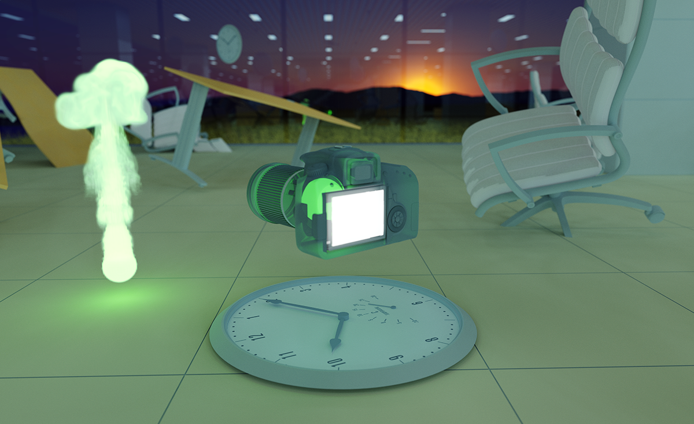
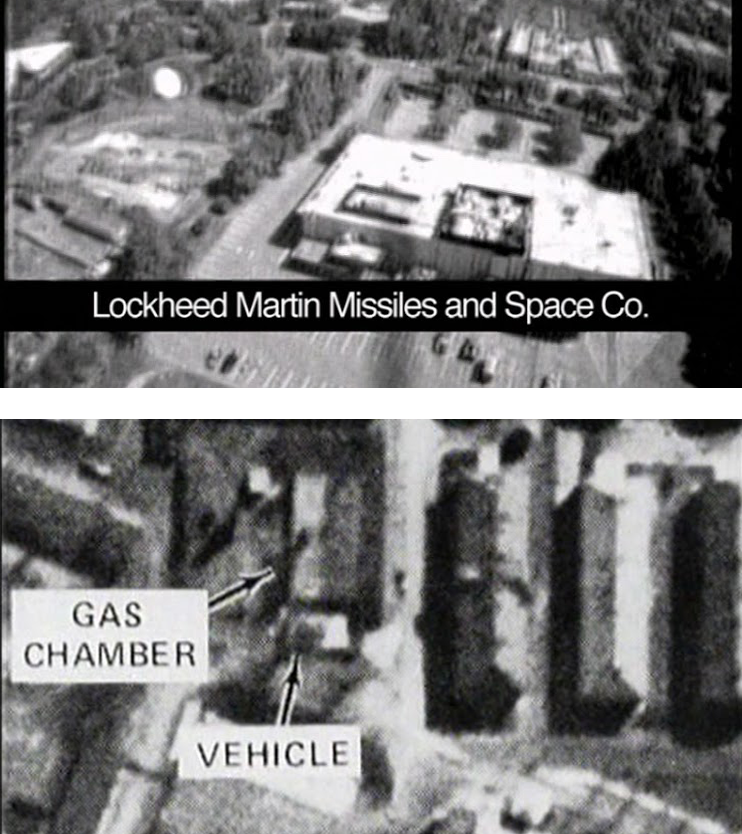
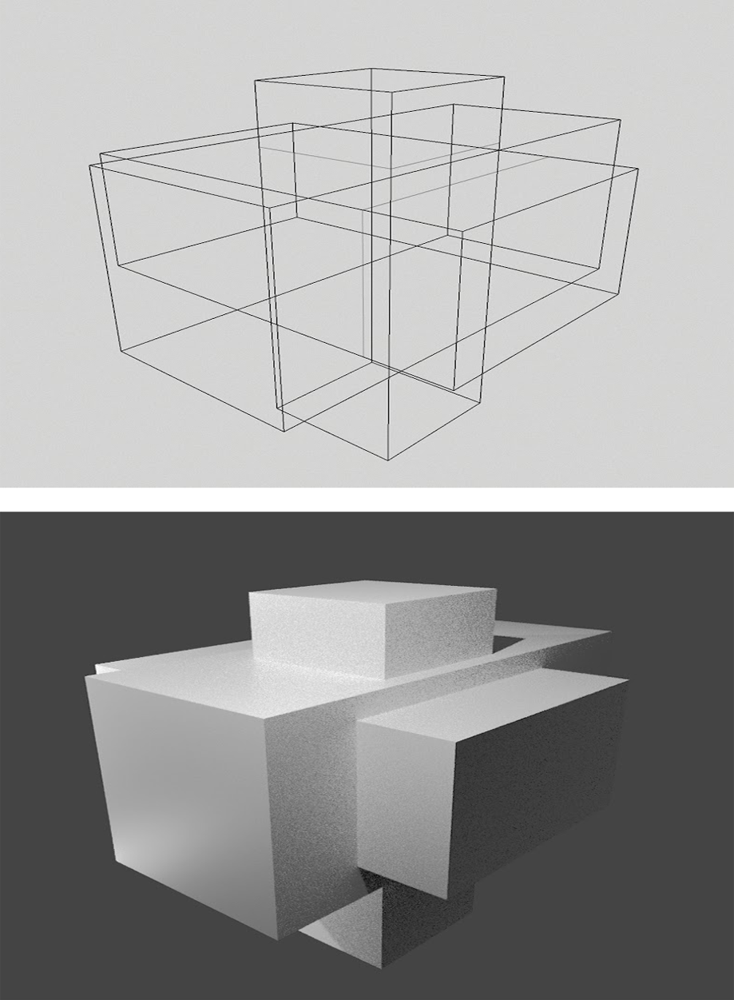
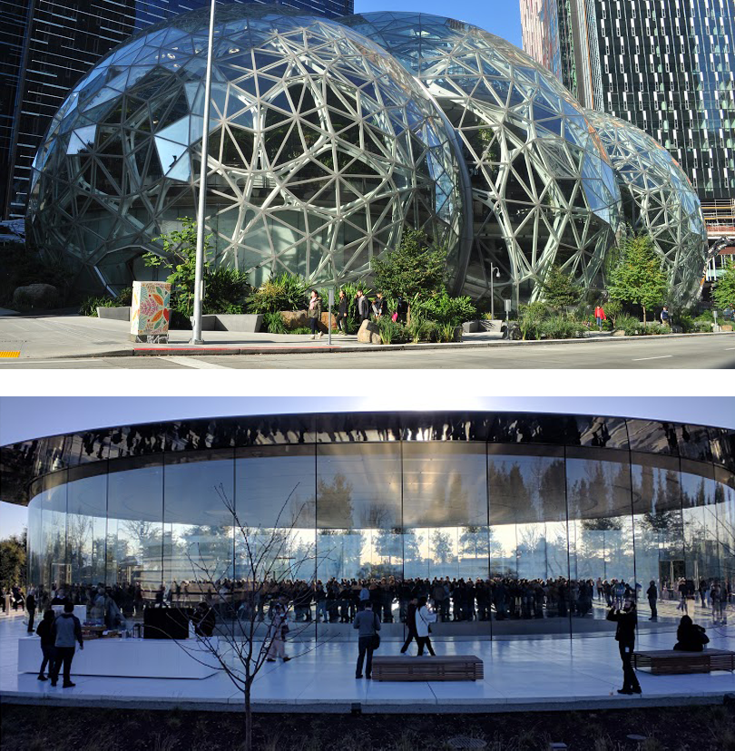

home
Lost Information,
Projected Transparency
brian bartz

I. An Inversion
In 1997, The Bureau of Inverse Technology, an ongoing art and research collaboration between Natalie Jermijenko and Kate Rich, launched the BITplane. A counter-surveillance project conceived of at the dawn of Silicon Valley's rise to global prominence, BITplane was a small radio-controlled airplane with an attached camera, which the duo flew over Palo Alto and Mountain View to invert the gaze of surveillance technology back onto the geography of its makers. The campuses of Sun Microsystems, XEROX Parc, Stanford Research Institute, and Lockheed Martin — all pioneers in the burgeoning military-surveillance-tech-industrial-complex — were put on view during the stalwart little drone's maiden voyage, its mission to understand the "threat of the camera to information space."
1
The project demonstrated a peculiar contradiction, as Jerimjenko explains in an interview at the Bard Drone Center.
2 What motivated the project was that these corporate campuses were all, "no-camera zones," and forbade UAV operation in their airspace, implying that the military technologies and company secrets housed within these facilities were easily capturable through the lens of a camera. And yet, as the BITplane made clear through it's scarcely legible black-and-white images, there was very little information to be easily gleaned off the surfaces of the architecture below. As Jerimijenko phrases it, "What could you actually see? What information could you take from the plane? Of course, the answer is not much, as contemporary drones have so aptly demonstrated: lots of images but not much actual trustable information."
3
..............
Twenty years earlier in the mid 1970's, CIA analysts reexamining images from the second world war faced a similar, if inverted, contradiction. As explored in Harun Farocki's Images of the World and the Inscription of War
4, those analysts discovered that aerial reconnaissance photos of factory construction taken over Krakow had inadvertently captured evidence of the as yet undiscovered Auschwitz concentration camp; in this case the aerial images were laden with actionable information, but because nobody was looking for it at the time, it was as if it was not there. It took thirty years for anybody to notice what had been captured. As narrated in the film: "The Nazis did not notice that someone had photographed their crimes, and the Americans did not notice that they had photographed them. The victims also noticed nothing. Notes as written into a book of God."
5
How might one account for these two cases: action leading to no information, and information leading to no action? Might these two examples illustrate the changing relationship between an image and it's capacity to store or convey information in an increasingly machinic era? What were these two shots fired off into the abyss?

top: annotated video still of the Lockheed Martin campus captured by the BITplane. bottom: Film still from Farocki's Images of the World and the Inscription of War, depicting the aerial photograph of Auschwitz finally reviewed and annotated in 1977.
II. Invisible Polygons Still Exist
To complicate things further still, let us turn our attention to an even more contemporary model for such a relationship: computer generated graphics. These kinds of images entail the meticulous modeling of objects in three dimensional space. In essence, this modeling process represents the conversion of information into a 3D form which is potentially legible to human vision. However, that visual legibility is not as much a given in the virtual space of a computer as it is with a camera inscribing light from the world. As Jacob Gaboury argues in the Hidden Surface Problem
6, It is necessary to delineate this kind of computationally generated, three dimensional image from prior visual forms (like photography), because to even generate such an image, engineers have had to mathematically construct abstractions such as vanishing-point perspective and the opacity of surfaces. These features are not inherent to the computational image in the same way that they are to the photographic. As such, the imposition of these familiar visual constructs which make an image human-readable were not an inevitability so much as a calculated decision.
Gaboury spends particular time engaging the development of so-called "hidden surface" algorithms throughout the 80s, which proved immensely difficult for the field to produce. Largely concentrated in the University of Utah, these pioneering engineers, many of whom would go on to work for the same companies surveilled by the BITplane, struggled immensely with the question of how to algorithmically determine whether one vertex appeared behind another in a computer generated image. While it was relatively trivial to model three dimensional objects in virtual space as well as render them through a mathematically constructed perspective akin to that of a camera, what proved incredibly difficult was determining if, from that constructed perspective, a given surface of an object would appear behind another, and would thus necessitate obfuscation in the output image.
7

An illustration of a hidden surface algorithm at work. On top, a wireframe rendering of intersecting 3D forms is less legible to the human eye, but technically conveys the most information. On the bottom, after the algorithm and shading are applied, the form is more legible to the human eye, but obscures much of the original information necessary to produce the forms which populate the image.
Therein lies what, on the surface, seems to be a contradiction in the generation of computer graphics; in order for a machine to generate an image that is legible to human vision, it necessarily entails the removal of at least some of the original information which was used to describe its forms in the first place. In the same way that the BITplane could not see beneath the roofs of those tech campuses which it counter-surveilled, nor into the computer hard disks which actually held most of their proprietary secrets, so too does a computational image hide more information than it reveals. The difference being that this newer type of image was artificially generated from a complete body of information rather than constrained by the physical capacity for light to penetrate opaque surfaces. To my mind, this amounts to an ideological choice on the part of the engineers, one in which a computer is endowed with all the information, deciding algorithmically what to disclose. This kind of selective obfuscation and tight control over the accessibility of information is a pervasive organizing principle underlying many contemporary technologies.
8
III. Projecting Transparency
Perhaps it was that those companies did not fully understand the new visual paradigm they had already set in motion when they decided to prohibit the use of cameras on or around their campuses. Perhaps they had not realized that, through the work of their own engineers, the world had moved on from the model described in Farocki's film, one in which someone seeking information from an image might well find it if they knew what they were looking for and were paying sufficient attention. Or perhaps it was a paranoid understanding that new paradigms usually arise before the death of the old, that a camera could still catch them off guard. Continued caution regarding cameras was still warranted, as evidenced in Andrew Norman Wilson's film Workers Leaving the Googleplex
9, in which the artist videotaped a group of minimum-wage laborers working on a book scanning project of questionable legality quickly shuffling into their cars after their shifts ended. He was promptly fired and threatened with litigation for recording it.
10
But despite the continuing (albeit shrinking) possibility of camera-based security breaches, these companies eventually came around, in a way; in the decades since BITplane was launched, the rise of mainstream privacy debates and the general opacity of Big Tech has forced many such companies to outwardly project an illusion of absolute transparency, despite their immense repositories of state and corporate secrets. As Key MacFarlane notes in The Greenhouse Effect
11, tech campuses have increasingly made a turn towards "green architecture," which, incidentally, entails their construction out of glass and transparent materials. And according to MacFarlane, this type of transparency has as much to do with generating trustworthiness as, "making brutal stratifications of class, race and gender appear transparently natural."
12
Sometimes this outwardly projected transparency looks like Google taking journalists on tours through data centers, Apple building high-ceilinged stores that you can see right through from the outside, or the trend of new tech HQs being constructed entirely from ergonomically curved, eco-friendly glass panels, likely produced using heavily exploited labor and highly extractive supply chains. Regardless of how this pseudo-transparency is manufactured and projected, all we have left to look at is a 3D video of a Google server rack in all its opaque glory.
They realized, somewhere along the way, that most of their data did not need to be visually accessible, that their best kept proprietary secrets are not going to be ones that a person with a camera could walk away with, but would exist instead as bits and bytes. And as hidden surface algorithms illustrate, once information is encoded computationally, its translation into a visually legible form tends to be tightly controlled and thus inflected with the biases and intentions of those who control the bits and bytes. As such, the accessibility and trustworthiness of information in an image —which was never really a given— is especially not a given now.

top: Amazon's Sphere campus in Seattle. bottom: Visitor center for Apple's new ring shaped campus: Apple Park. Transparency has become an underlying architectural principle for new tech campuses.
IV. Operational Images, Uncanny Images
Near the end of his life, Harun Farocki became preoccupied with what he called "operational images," a term he coined to describe the increasing volume of images which are created by machines and are only legible to machines
13. They are the visual detritus of our age: computer vision algorithms passing scores of abstractly-patterned jpegs between one another to better understand their inputs, QR codes littering the virtual and physical world, microsecond graphs produced by high frequency stock trading bots, a body detection algorithm running on a predator drone deciding whether or not to launch a missile, ultimately based on its interpretation of small pixel-clusters; the list goes on. Humans are not necessarily part of the semantic chain any longer; an image is often the output of one machine and the input to another, even when the consequences are all-too-human in terms of their resultant violence.
But on the other end of this spectrum, we find ourselves climbing out of the deepest depths of the uncanny valley, wherein the computationally generated images we do create for human consumption are nearing a complete mimesis. We appear to be asymptotically approaching the ability to generate images which are hyper-compatible with our understanding of reality, to an extent that was perhaps unthinkable to those early engineers at the University of Utah. Once we cannot distinguish a render from a photograph, the informatic distinctions between the two become flattened.
 A computer generated image from the Ikea Catalog. They are rendered using a contemporary light-simulation technique called 'ray tracing.' Around 75% of images in the Ikea Catalog are now made using 3D modeling software, as it is logistically much easier than photography.
A computer generated image from the Ikea Catalog. They are rendered using a contemporary light-simulation technique called 'ray tracing.' Around 75% of images in the Ikea Catalog are now made using 3D modeling software, as it is logistically much easier than photography.
The types of images being produced computationally are thus stratifying further with each day, either cutting humans out entirely, or supplying us with images almost indistinguishable from those produced by cameras, still our deeply flawed metric for realism and truth. In this ever-growing gulf, what have we lost? What have we found? And what will get buried? What is clear is that, at either end of this operational to uncanny spectrum, our capacity to consume and interpret visual information becomes deeply problematized.
This is, at the end of the day, a story about an asymmetry of information, which, without coincidence, comes into being concurrently with the rise of data as capital. Such a paradigm is entirely contingent on accumulating and centralizing as much information as possible and deciding very carefully what its subjects can and cannot see of its superstructure. It's a large scale compartmentalizing of data into abstract and horizontally positioned clusters that one can only interface with using proprietary protocols. The design makes it impossible to get a bird's eye view on it all, too complex for any individual to fully comprehend.
Maybe we are all a little like the BITplane now, roving about the world while processing countless empty images, attempting with futility to gain that vertical perspective which might lend us clarity. And even in those images which aren't so empty, which do tell us something meaningful, can we even trust that they are disclosing to us anything but a partial truth? A carefully curated reality? Once the images are rendered and distributed, their hidden surfaces are as opaque to us as what lies beneath the roof of the Lockheed Martin headquarters; 3D rendering is as much a mode for generating images as it is a lossy compression format that necessarily sheds information. Can we use computer graphics as a way to highlight the fault-lines, exaggerate the contradictions of our new visual schema? Maybe at least artists can recuperate computer graphics away from the overly-smooth, frictionless computer renderings increasingly saturating our world, folding such tools back onto themselves to reveal something about their constitutive parts, their component ideologies.
___________________________________________
Notes:
1. Bureau of Inverse Technology
2. Interview at the Drone Bard Center
3. ibid.
4. Harun Farocki's Images of the World and the Inscription of War
5. ibid.
6. Hidden Surface Problems by Jacob Gaboury
7. ibid.
8. See: Abstraction in the computer engineering sense. "The essence of abstraction is preserving information that is relevant in a given context, and forgetting information that is irrelevant in that context." - John V. Guttag
9. Andrew Norman Wilson's Workers Leaving the Googleplex
10. Interview with Andrew Norman Wilson
11. The Greenhouse Effect by Key MacFarlane
12. ibid.
13. Operational Images by Trevor Paglen